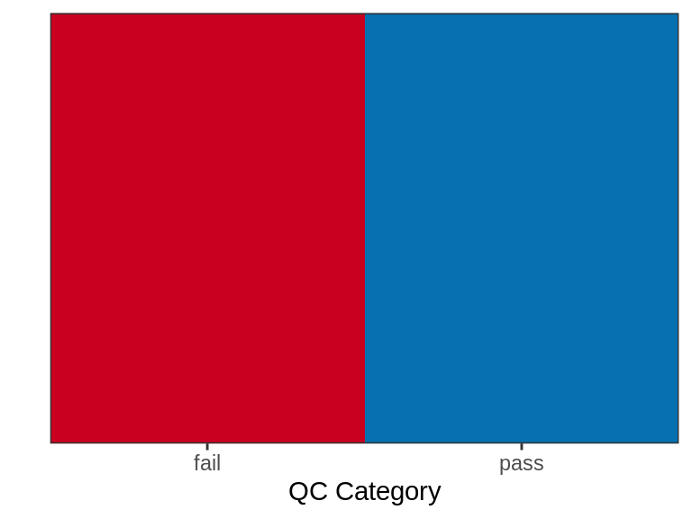
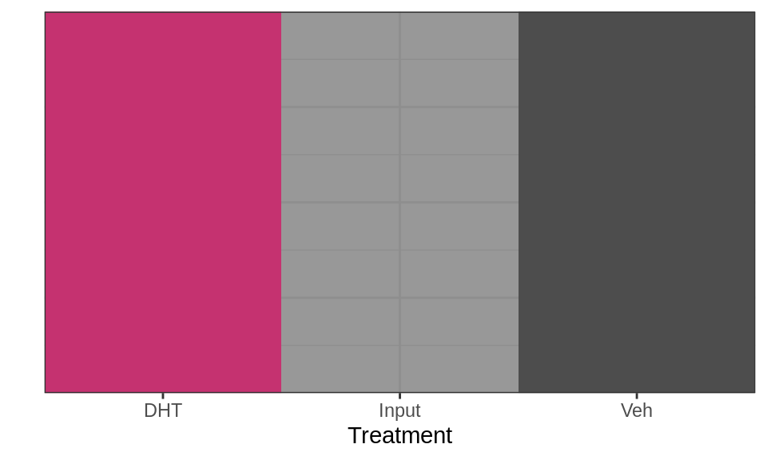
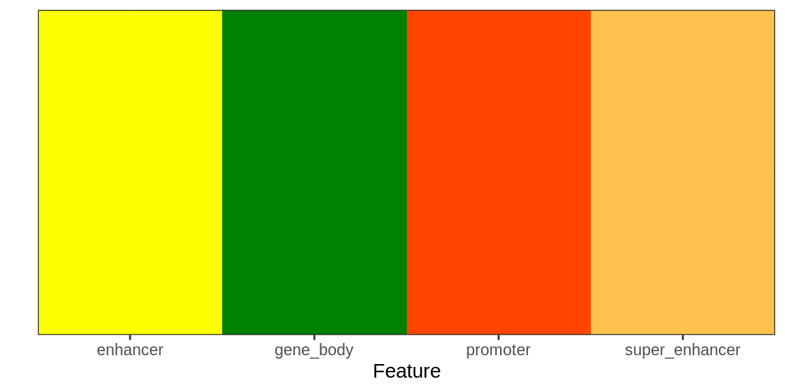
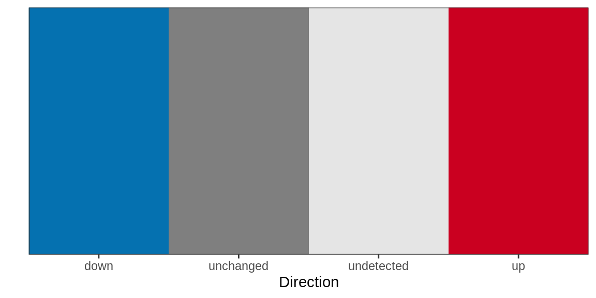

library(tidyverse)
library(magrittr)
library(rtracklayer)
library(glue)
library(pander)
library(scales)
library(plyranges)
library(yaml)
library(Rsamtools)## Deal with github packages
# BiocManager::install("steveped/extraChIPs", ask = FALSE)
stopifnot(library(extraChIPs, logical.return = TRUE))panderOptions("big.mark", ",")
panderOptions("missing", "")
panderOptions("table.split.table", Inf)
theme_set(
theme_bw() +
theme(plot.title = element_text(hjust = 0.5))
)config <- read_yaml(here::here("config", "config.yml"))treat_levels <- config$comparisons$contrasts %>%
unlist() %>%
unique()
samples <- here::here(config$samples$file) %>%
read_tsv() %>%
mutate(
treat = factor(treat, levels = unique(c(treat_levels, treat))),
target = as.factor(target)
)
treat_levels <- levels(samples$treat)annotation_path <- here::here("output", "annotations")
if (!dir.exists(annotation_path)) dir.create(annotation_path, recursive = TRUE)
all_out <- list(
gtf = file.path(annotation_path, "all_gr.rds"),
transcript_models = file.path(annotation_path, "trans_models.rds"),
tss = file.path(annotation_path, "tss.rds"),
colours = file.path(annotation_path, "colours.rds")
)Before analysing any datasets, annotations for the genome and transcriptome need to be defined.
sq <- samples %>%
mutate(
path = here::here(config$paths$bam, target, glue("{sample}.bam"))
) %>%
.[["path"]] %>%
BamFileList() %>%
seqinfo() %>%
sortSeqlevels() %>%
as.data.frame() %>%
.[rownames(.) %in% paste0("chr", c(1:22, "X", "Y")),] %>% # This covers mouse & rat
mutate(
isCircular = FALSE,
genome = config$genome$build
) %>%
as("Seqinfo")
write_rds(sq, file.path(annotation_path, "seqinfo.rds"))
sq %>%
as.data.frame() %>%
rownames_to_column("seqnames") %>%
dplyr::select(seqnames, seqlengths) %>%
write_tsv(
here::here(annotation_path, "chrom.sizes"), col_names = FALSE
)As the foundation for all annotation objects, the description of the underlying genome is required as a Seqinfo object. For this analysis, both the mitochondrial genome and scaffolds were excluded, giving only the autosomes and sex chromosomes. This Seqinfo will is added to all objects requiring information about the underlying genome, such as a GenomicRanges object.
blacklist <- file.path(annotation_path, "blacklist.bed.gz") %>%
import.bed(seqinfo = sq) %>%
sort()blacklist %>%
group_by(name) %>%
summarise(
n = n(),
p = percent(sum(width)/ sum(seqlengths(sq))),
kb = sum(width) / 1e3,
min = min(width) / 1e3,
median = median(width) / 1e3,
max = max(width) / 1e3
) %>%
as.data.frame() %>%
as_tibble() %>%
dplyr::rename_all(str_to_title) %>%
dplyr::rename(
Type = Name,
`Nbr Regions` = N,
`% Genome` = P,
`Total (kb)` = Kb,
`Min (kb)` = Min,
`Median (kb)` = Median,
`Max (kb)` = Max
) %>%
pander(
caption = glue(
"Summary of genomic regions excluded in the blacklist. ",
"The default set of blacklisted regions was used, as obtained from ",
"https://github.com/Boyle-Lab/Blacklist (ENCODE)"
),
justify = "lrrrrrr"
)| Type | Nbr Regions | % Genome | Total (kb) | Min (kb) | Median (kb) | Max (kb) |
|---|---|---|---|---|---|---|
| High Signal Region | 583 | 8.7% | 269,778 | 1.1 | 13.4 | 30,590 |
| Low Mappability | 251 | 0.2% | 5,192 | 1.4 | 5.8 | 361.7 |
gtf <- glue(
"{annotation_path}/",
"gencode.v", config$genome$gencode, "lift",
str_extract(config$genome$build, '[0-9]+$'),
".annotation.gtf.gz"
)reqd_cols <- c(
"type",
"gene_id", "gene_type", "gene_name",
"transcript_id", "transcript_type", "transcript_name",
"exon_id"
)
all_gr <- gtf %>%
import.gff(
which = GRanges(sq),
feature.type = c("gene", "transcript", "exon")
) %>%
select(all_of(reqd_cols)) %>%
mutate(
gene_id = str_remove_all(gene_id, "\\..+$"),
transcript_id = str_remove_all(transcript_id, "\\..+$"),
exon_id = str_remove_all(exon_id, "\\..+$"),
) %>%
sort() %>%
subset(seqnames %in% seqlevels(sq)) %>%
keepSeqlevels(seqlevels(sq)) %>%
split(f = .$type)
seqinfo(all_gr) <- sq
write_rds(all_gr, all_out$gtf, compress = "gz")gtf, excluding mitochondrial features.Seqinfo was also placed as the foundation of this annotation object, ensuring this propagates through all subsequent objectsrds file for simple import into subsequent steps of the analysisIn total this object contained annotations for 62,449 genes, 229,655 transcripts and 1,379,777 exons.
trans_models <- all_gr$exon %>%
as.data.frame() %>%
as_tibble() %>%
group_by(transcript_id) %>%
mutate(exon = paste0(transcript_id, "_", seq_along(transcript_id))) %>%
makeGRangesFromDataFrame(keep.extra.columns = TRUE) %>%
mutate(feature = as.character(type)) %>%
select(type, gene = gene_id, exon, transcript = transcript_id, symbol = gene_name) %>%
sort() %>%
setNames(.$transcript) %>%
set_genome_info(
genome = genome(sq),
seqnames = seqlevels(sq),
seqlengths = seqlengths(sq),
is_circular = isCircular(sq)
)
write_rds(trans_models, all_out$transcript_models, compress = "gz")Visualisation using the Bioconductor package Gviz also requires a specific GRanges structure for gene and transcript models to be displayed. This object was formed here, so they too could be simply imported during all visualisation stages.
tss <- suppressWarnings(
all_gr$transcript %>%
promoters(upstream = 1500, downstream = 500) %>%
trim() # This will tidy up any out-of-range issues for chrM
) %>%
select(transcript_type, transcript_id, gene_id, gene_name)
rna_path <- here::here(config$external$rnaseq)
rnaseq <- tibble(gene_id = character())
if (!is.null(rna_path)) {
stopifnot(file.exists(rna_path))
if (str_detect(rna_path, "tsv$")) rnaseq <- read_tsv(rna_path)
if (str_detect(rna_path, "csv$")) rnaseq <- read_csv(rna_path)
}
ids <- rnaseq %>%
dplyr::select(ends_with("id")) %>%
unlist() %>%
unique()
tss <- tss %>%
mutate(
detected = gene_id %in% ids | transcript_id %in% ids,
blacklisted = overlapsAny(., blacklist)
)
write_rds(tss, all_out$tss, compress = "gz")TSS regions were defined as those within -1500/+500bp of a transcription start site, excluding those which overlapped a blacklisted region. If an RNA-Seq dataset was supplied, these were restricted to those from detected genes (or transcripts) as provided. This process defined 229,655 TSS regions from the original set of 229,488 transcripts as defined by the complete set of annotations. These TSS regions were associated with 62,400 of the 62,449 annotated genes.
.fixRNACase <- function(x) {
x <- str_to_lower(x)
str_replace_all(x, "rna$", "RNA")
}
tss %>%
subset(blacklisted & detected) %>%
mcols() %>%
as_tibble() %>%
mutate(
transcript_type = transcript_type %>%
fct_lump_prop(5e-3, other_level = "other") %>%
fct_relabel(str_replace_all, pattern= "_", replacement = " ") %>%
fct_relabel(str_to_title) %>%
fct_relabel(str_replace_all, pattern = "Tec", "TEC") %>%
fct_relabel(str_replace_all, pattern = "(.+)rna", replacement = .fixRNACase)
) %>%
group_by(transcript_type) %>%
summarise(
n_transcripts = length(unique(transcript_id)),
n_genes = length(unique(gene_id))
) %>%
arrange(desc(n_transcripts)) %>%
rename_all(str_replace_all, pattern = "_", replacement = " ") %>%
rename_all(str_to_title) %>%
pander(
justify = "lrr",
caption = glue(
"Breakdown of detected transcripts which have also been blacklisted. ",
"Blacklisted regions overlapped ",
"{length(unique(mcols(subset(tss, blacklisted))$transcript_id))} ",
"transcripts from ",
"{length(unique(mcols(subset(tss, blacklisted))$gene_id))} genes."
)
)| Transcript Type | N Transcripts | N Genes |
|---|---|---|
| Protein Coding | 538 | 156 |
| lncRNA | 420 | 38 |
| Processed Transcript | 409 | 133 |
| Retained Intron | 229 | 81 |
| Nonsense Mediated Decay | 141 | 63 |
| Transcribed Unprocessed Pseudogene | 42 | 42 |
| Processed Pseudogene | 41 | 39 |
| Unprocessed Pseudogene | 35 | 34 |
| lincRNA | 30 | 4 |
| Other | 17 | 14 |
tss %>%
subset(detected & !blacklisted) %>%
mcols() %>%
as_tibble() %>%
mutate(
transcript_type = transcript_type %>%
fct_lump_prop(5e-3, other_level = "other") %>%
fct_relabel(str_replace_all, pattern= "_", replacement = " ") %>%
fct_relabel(str_to_title) %>%
fct_relabel(str_replace_all, pattern = "Tec", "TEC") %>%
fct_relabel(str_replace_all, pattern = "(.+)rna", replacement = .fixRNACase)
) %>%
group_by(transcript_type) %>%
summarise(
n_transcripts = length(unique(transcript_id)),
n_genes = length(unique(gene_id))
) %>%
arrange(desc(n_transcripts)) %>%
rename_all(str_replace_all, pattern = "_", replacement = " ") %>%
rename_all(str_to_title) %>%
pander(
justify = "lrr",
caption = glue(
"Breakdown of detected transcripts which were not blacklisted. "
)
)| Transcript Type | N Transcripts | N Genes |
|---|---|---|
| Protein Coding | 63,362 | 12,509 |
| Retained Intron | 23,997 | 7,503 |
| Processed Transcript | 21,266 | 7,998 |
| Nonsense Mediated Decay | 12,799 | 5,494 |
| lncRNA | 7,375 | 937 |
| Processed Pseudogene | 1,147 | 1,147 |
| Other | 604 | 568 |
col_config <- here::here("config", "rmarkdown.yml") %>%
read_yaml() %>%
.[["colours"]]
## qc_colours need to have `Pass` and `Fail`
missing_qc_cols <- setdiff(c("pass", "fail"), names(col_config$qc))
if ("pass" %in% missing_qc_cols) col_config$qc$pass <- "#0571B0" # Blue
if ("fail" %in% missing_qc_cols) col_config$qc$fail <- "#CA0020" # Red
col_config$qc <- col_config$qc[c("pass", "fail")]
## The colours specified as treat_colours should contain all treat_levels + Input
## If Input is missing, set to #33333380 ('grey20' + alpha = 50)
## This should be a standard chunk for all workflows
missing_treat_cols <- setdiff(
c("Input", treat_levels), names(col_config$treat)
)
if (length(missing_treat_cols) > 0) {
if ("Input" %in% missing_treat_cols)
col_config$treat$Input <- "#33333380"
## Automatically sample from the viridis palette if no colour is assigned
col_config$treat[setdiff(missing_treat_cols, "Input")] <- hcl.colors(
length(setdiff(missing_treat_cols, "Input"))
)
}
## Direction colours always need up, down, unchanged & undetected
missing_dir_cols <- setdiff(
c("up", "down", "unchanged", "undetected"), names(col_config$direction)
)
if (length(missing_dir_cols) > 0){
def_dir_cols <- c(
up = "#CA0020", down = "#0571B0",
unchanged = "#7F7F7F", undetected = "#E5E5E5"
)
col_config$direction[missing_dir_cols] <- def_dir_cols[missing_dir_cols]
}features <- suppressWarnings(
here::here(config$external$features) %>%
import.gff(genome = sq) %>%
sort()
)
stopifnot("feature" %in% colnames(mcols(features)))
feat_col <- col_config$features
feat_levels <- unique(features$feature)
missing_feat_col <- setdiff(feat_levels, names(feat_col))
if (length(missing_feat_col) > 0) {
n <- length(missing_feat_col)
feat_col[missing_feat_col] <- hcl.colors(max(9, n), "Spectral")[seq_len(n)]
}
col_config$features <- feat_col.plotScheme <- function(x, xlab = "", ylab = "") {
x %>%
as_tibble() %>%
pivot_longer(cols = everything()) %>%
ggplot(
aes(name, 1, fill = name)
) +
geom_raster() +
scale_fill_manual(values = unlist(x)) +
scale_x_discrete(expand = expansion(c(0, 0))) +
scale_y_continuous(expand = expansion(c(0, 0))) +
labs(x = xlab, y = ylab) +
guides(fill = "none") +
theme(
axis.text.y = element_blank(),
axis.ticks.y = element_blank()
)
}Colours were checked where provided and any missing colours were automatically assigned. These colour schemes are shown below and will be propagated through all workflows. To change any colours, simply add them to config/rmarkdown.yml.
col_config$qc %>%
.plotScheme(xlab = "QC Category") 
col_config$treat %>%
.plotScheme(xlab = "Treatment")
feat_col %>%
.plotScheme(xlab = "Feature")
col_config$direction %>%
.plotScheme(xlab = "Direction")
write_rds(col_config, all_out$colours)During this workflow, the following files were exported:
R version 4.1.1 (2021-08-10)
Platform: x86_64-conda-linux-gnu (64-bit)
locale: LC_CTYPE=en_AU.UTF-8, LC_NUMERIC=C, LC_TIME=en_AU.UTF-8, LC_COLLATE=en_AU.UTF-8, LC_MONETARY=en_AU.UTF-8, LC_MESSAGES=en_AU.UTF-8, LC_PAPER=en_AU.UTF-8, LC_NAME=C, LC_ADDRESS=C, LC_TELEPHONE=C, LC_MEASUREMENT=en_AU.UTF-8 and LC_IDENTIFICATION=C
attached base packages: parallel, stats4, stats, graphics, grDevices, utils, datasets, methods and base
other attached packages: extraChIPs(v.0.99.6), SummarizedExperiment(v.1.22.0), Biobase(v.2.52.0), MatrixGenerics(v.1.4.3), matrixStats(v.0.61.0), Rsamtools(v.2.8.0), Biostrings(v.2.60.2), XVector(v.0.32.0), yaml(v.2.2.2), plyranges(v.1.12.1), scales(v.1.1.1), pander(v.0.6.4), glue(v.1.6.1), rtracklayer(v.1.52.1), GenomicRanges(v.1.44.0), GenomeInfoDb(v.1.28.4), IRanges(v.2.26.0), S4Vectors(v.0.30.2), BiocGenerics(v.0.38.0), magrittr(v.2.0.2), forcats(v.0.5.1), stringr(v.1.4.0), dplyr(v.1.0.8), purrr(v.0.3.4), readr(v.2.1.2), tidyr(v.1.2.0), tibble(v.3.1.6), ggplot2(v.3.3.5) and tidyverse(v.1.3.1)
loaded via a namespace (and not attached): utf8(v.1.2.2), tidyselect(v.1.1.1), RSQLite(v.2.2.9), AnnotationDbi(v.1.54.1), htmlwidgets(v.1.5.4), grid(v.4.1.1), BiocParallel(v.1.26.2), munsell(v.0.5.0), codetools(v.0.2-18), withr(v.2.4.3), colorspace(v.2.0-2), filelock(v.1.0.2), highr(v.0.9), knitr(v.1.37), rstudioapi(v.0.13), ggside(v.0.2.0), labeling(v.0.4.2), GenomeInfoDbData(v.1.2.6), bit64(v.4.0.5), farver(v.2.1.0), rprojroot(v.2.0.2), vctrs(v.0.3.8), generics(v.0.1.2), xfun(v.0.29), biovizBase(v.1.40.0), csaw(v.1.26.0), BiocFileCache(v.2.0.0), R6(v.2.5.1), doParallel(v.1.0.17), clue(v.0.3-60), locfit(v.1.5-9.4), AnnotationFilter(v.1.16.0), bitops(v.1.0-7), cachem(v.1.0.6), DelayedArray(v.0.18.0), assertthat(v.0.2.1), BiocIO(v.1.2.0), vroom(v.1.5.7), nnet(v.7.3-17), gtable(v.0.3.0), Cairo(v.1.5-12.2), ensembldb(v.2.16.4), rlang(v.1.0.1), GlobalOptions(v.0.1.2), splines(v.4.1.1), lazyeval(v.0.2.2), dichromat(v.2.0-0), broom(v.0.7.12), checkmate(v.2.0.0), modelr(v.0.1.8), GenomicFeatures(v.1.44.2), backports(v.1.4.1), Hmisc(v.4.6-0), EnrichedHeatmap(v.1.22.0), tools(v.4.1.1), ellipsis(v.0.3.2), jquerylib(v.0.1.4), RColorBrewer(v.1.1-2), Rcpp(v.1.0.8), base64enc(v.0.1-3), progress(v.1.2.2), zlibbioc(v.1.38.0), RCurl(v.1.98-1.6), prettyunits(v.1.1.1), rpart(v.4.1.16), GetoptLong(v.1.0.5), haven(v.2.4.3), ggrepel(v.0.9.1), cluster(v.2.1.2), fs(v.1.5.2), here(v.1.0.1), data.table(v.1.14.2), circlize(v.0.4.14), reprex(v.2.0.1), ProtGenerics(v.1.24.0), hms(v.1.1.1), evaluate(v.0.14), XML(v.3.99-0.8), jpeg(v.0.1-9), readxl(v.1.3.1), gridExtra(v.2.3), shape(v.1.4.6), compiler(v.4.1.1), biomaRt(v.2.48.3), crayon(v.1.5.0), htmltools(v.0.5.2), tzdb(v.0.2.0), Formula(v.1.2-4), lubridate(v.1.8.0), DBI(v.1.1.2), dbplyr(v.2.1.1), ComplexHeatmap(v.2.8.0), GenomicInteractions(v.1.26.0), rappdirs(v.0.3.3), Matrix(v.1.4-0), cli(v.3.2.0), Gviz(v.1.36.2), metapod(v.1.0.0), igraph(v.1.2.11), pkgconfig(v.2.0.3), GenomicAlignments(v.1.28.0), foreign(v.0.8-82), xml2(v.1.3.3), InteractionSet(v.1.20.0), foreach(v.1.5.2), bslib(v.0.3.1), rvest(v.1.0.2), VariantAnnotation(v.1.38.0), digest(v.0.6.29), rmarkdown(v.2.11), cellranger(v.1.1.0), htmlTable(v.2.4.0), edgeR(v.3.34.1), restfulr(v.0.0.13), curl(v.4.3.2), rjson(v.0.2.21), lifecycle(v.1.0.1), jsonlite(v.1.7.3), limma(v.3.48.3), BSgenome(v.1.60.0), fansi(v.1.0.2), pillar(v.1.7.0), lattice(v.0.20-45), KEGGREST(v.1.32.0), fastmap(v.1.1.0), httr(v.1.4.2), survival(v.3.2-13), png(v.0.1-7), iterators(v.1.0.14), bit(v.4.0.4), stringi(v.1.7.6), sass(v.0.4.0), blob(v.1.2.2), latticeExtra(v.0.6-29) and memoise(v.2.0.1)